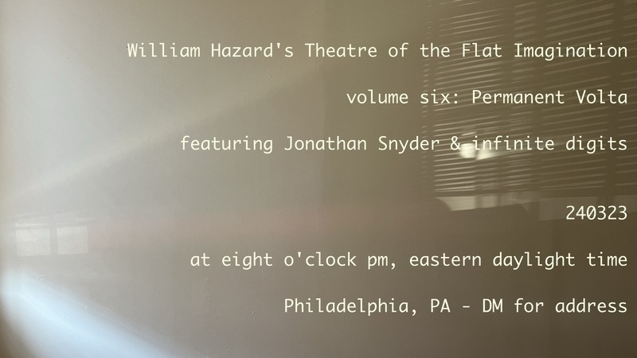

240228-permanent

Theatre of the Flat Imagination, volume six: Permanent Volta† will occur at eight o'clock pm, eastern daylight time, on March 23rd, 2024 and will feature performances by Jonathan Snyder & infinite digits. If you'd like to attend this event, please get in touch with me by email, and I'll send you the address.
†Permanent Volta is the title of the 2021 book of poetry by Rosie Stockton. Published by Nightboat Books, it was the recipient of the 2019 Sawtooth Prize. Rosie Stockton’s poems have been published by Social Text Journal, VOLT, Jubilat, Apogee, Mask Magazine, Tripwire and WONDER PRESS. They hold an M.A. in Creative Writing from Eastern Michigan University and are currently a Ph.D. Student in the Gender Studies Department at UCLA. We are tremendously grateful to Rosie for their permission to borrow their book’s title for our performance.
williamthazard@protonmail.com